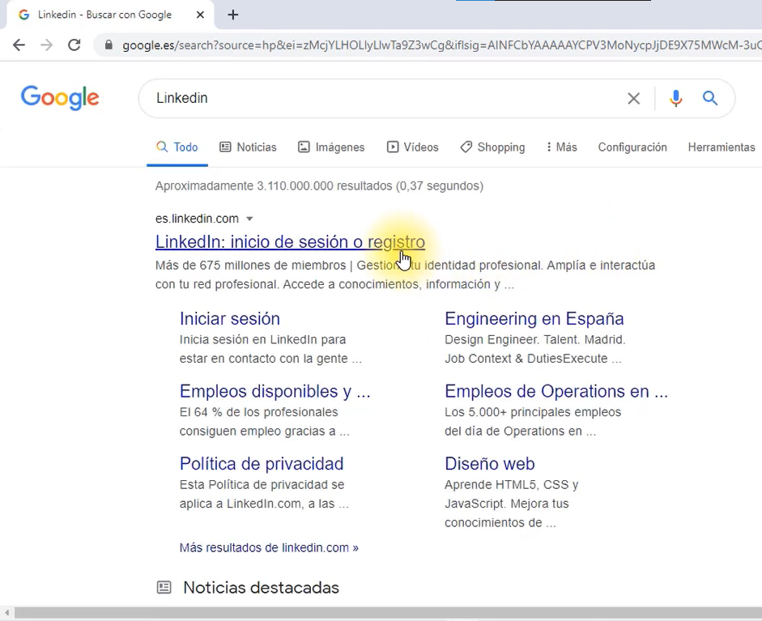

Como crear un perfil en LinkedIn
Para crear un perfil en LinkedIn, sigue estos pasos:
- Visita la página de inicio de LinkedIn (www.linkedin.com)
- Haz clic en "Regístrate" en la esquina superior derecha de la pantalla.
- Ingresa tu información personal, como tu nombre, correo electrónico y contraseña.
- Haz clic en "Unirse ahora"
- Sigue las instrucciones para completar tu perfil, incluyendo información como tu educación, experiencia
laboral
y
habilidades.
- Agrega una foto de perfil y una foto de portada (opcional)
- Haz clic en "Guardar" y comienza a conectarte con otros profesionales.

Los 10 errores que debes evitar al crear un perfil en LinkedIn.
- Falta de una foto de perfil profesional y actual.
- Un título de perfil poco claro o confuso.
- Falta de información en la sección de experiencia laboral.
- Uso de lenguaje inapropiado o erróneo.
- Falta de enfoque en las habilidades y logros relevantes.
- Una red de contactos limitada.
- Falta de actualizaciones regulares en el perfil.
- Utilizar una URL personalizada no profesional.
- Falta de información en la sección de educación.
- Falta de una descripción adecuada en la sección de resumen.
Manera correcta de crear un perfil en LinkedIn.
- Asegúrate de tener una foto de perfil profesional y actual.
- Utiliza un título de perfil claro y preciso que refleje tu rol actual y tus habilidades.
- Completa toda la información en la sección de experiencia laboral, incluyendo tus responsabilidades,
logros y
habilidades adquiridas en cada trabajo.
- Utiliza un lenguaje profesional y evita errores gramaticales.
- Enfatiza tus habilidades y logros relevantes en la sección de habilidades y recomendaciones.
- Amplía tu red de contactos conectando con colegas, mentores y profesionales del sector.
- Actualiza regularmente tu perfil con información actualizada y nuevos logros.
- Utiliza una URL personalizada profesional.
- Incluye información detallada sobre tu educación en la sección correspondiente.
- Escribe una descripción en la sección de resumen que resalte tus habilidades y experiencia, y explique
cómo
puedes ayudar a los demás.